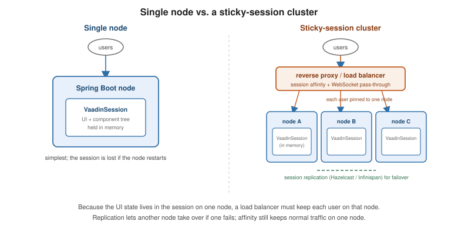

Production and Deployment
|
This content was generated with the assistance of AI and should be verified against the official documentation before being relied on in production. |
In development, Vaadin serves the frontend from a live dev server. A production build compiles, bundles and minifies it into the deployable artifact, and validates any commercial component licences. This page follows Deploying to Production.
The production build
A generated project has a production Maven profile that activates vaadin:build-frontend and sets
vaadin.productionMode=true:
<profile>
<id>production</id>
<build>
<plugins>
<plugin>
<groupId>com.vaadin</groupId>
<artifactId>vaadin-maven-plugin</artifactId>
<executions>
<execution>
<goals>
<goal>build-frontend</goal>
</goals>
</execution>
</executions>
</plugin>
</plugins>
</build>
</profile>mvn -Pproduction packageThe build produces an optimised frontend bundle (tree-shaken, minified, split, with a hashed filename per
chunk and a precompressed .gz / .br), embeds it in the artifact, and disables dev tools and the dev
server. Commercial components (Charts, Grid Pro, …) validate their licence at this step: a CI machine needs a
vaadin.offlineKey or a server-license file, or the build fails. See
Production build.
frontend dev server + live reload
no bundling"] src --> prod["mvn -Pproduction package
build-frontend: tree-shake, minify,
split, precompress; licence check"] prod --> war["WAR
(servlet container)"] prod --> jar["executable Spring Boot jar"] prod --> native["GraalVM native image"] jar --> docker["Docker image"] war --> docker
Deployment targets
| Target | Notes |
|---|---|
Spring Boot jar |
|
WAR |
Set |
Docker |
A multi-stage build: build with Maven, copy the jar (or its layered directories) into a slim JRE image. |
GraalVM native image |
|
Cloud |
AWS (Elastic Beanstalk / ECS), Azure (App Service / Container Apps), Google Cloud (Cloud Run) — each documented at Cloud providers. For running the container image on AWS, see ECS and Fargate and Choosing a Compute Service. For Google Cloud, see Cloud Run and Deploying Microservices on GKE. |
FROM eclipse-temurin:21-jdk AS build
WORKDIR /app
COPY . .
RUN ./mvnw -Pproduction -DskipTests package
FROM eclipse-temurin:21-jre
COPY --from=build /app/target/my-app.jar /app.jar
EXPOSE 8080
ENTRYPOINT ["java", "-jar", "/app.jar"]Reverse proxies and sticky sessions
The UI state lives in the VaadinSession on one server. Behind a load balancer you therefore need session
affinity (sticky sessions), and the proxy must pass through WebSocket upgrades for push
(Server Push). See
Reverse proxies.
Clustering
For failover, enable session replication in the container (Hazelcast, Infinispan, Spring Session) so a
dropped node’s sessions survive on another; the VaadinSession and its component tree are serialisable.
Even with replication, keep affinity on so normal traffic stays on one node. See
Distributed deployment.

Troubleshooting
-
Blank page / 404 on frontend assets — the production build did not run (
build-frontendmissing, or the profile not active). -
Licence error in CI — provide the offline key / server-license file.
-
Push disconnects — the proxy is not forwarding WebSocket upgrades; fall back to
Transport.LONG_POLLINGor fix the proxy config.
What the production build does
The production profile is a pipeline, and each stage fails in a recognisable way. Knowing the stages makes the
troubleshooting list below mechanical:
@Route, @JsModule, @NpmPackage"] --> gen["generate frontend entry points
and package.json"] gen --> inst["install npm dependencies"] inst --> bundle["bundle: tree-shake, minify,
split, hash, precompress"] bundle --> lic["validate commercial licences"] lic --> pack["package: jar or war
with the bundle inside"] pack --> run["start with productionMode=true"]
-
Scan — the build discovers the frontend modules your Java code references, so components that no view uses are not shipped.
-
Install and bundle — this stage needs Node.js. The Maven plugin installs its own copy when the machine has none, or an unsuitable one, so a CI agent without Node still works, but it needs network access to the npm registry unless you mirror it.
-
Licence validation — fails the build, not the run, when a commercial component is used without a subscription key.
-
Production mode at run time — the application serves the prebuilt bundle and refuses to start the development server. If it starts and then returns 404 for
VAADIN/build/..., it was packaged without the bundle.
Worked example: a hardened Spring Boot image
The Dockerfile in the previous section is the minimum. A deployable image also needs health probes, proper handling of the proxy’s headers, graceful shutdown (so a rolling deploy does not cut off users' requests), and a layered jar for fast rebuilds. The pieces fit together as follows.
Properties for a production profile (application-prod.properties):
# trust X-Forwarded-* from the reverse proxy so redirects and absolute URLs use the public scheme and host
server.forward-headers-strategy=framework
# let in-flight requests finish when the pod receives SIGTERM
server.shutdown=graceful
spring.lifecycle.timeout-per-shutdown-phase=30s
# probes for Kubernetes or a load balancer
management.endpoints.web.exposure.include=health
management.endpoint.health.probes.enabled=true
# keep sessions short enough that abandoned tabs free memory
server.servlet.session.timeout=30m
vaadin.productionMode=trueA layered, non-root image. Spring Boot can split the jar into dependency and application layers, so a code change rebuilds only a few kilobytes:
FROM eclipse-temurin:21-jdk AS build
WORKDIR /app
COPY . .
RUN ./mvnw -Pproduction -DskipTests package \
&& java -Djarmode=tools -jar target/my-app.jar extract --layers --destination target/extracted
FROM eclipse-temurin:21-jre
RUN useradd --system --uid 10001 app
WORKDIR /app
COPY --from=build /app/target/extracted/dependencies/ ./
COPY --from=build /app/target/extracted/spring-boot-loader/ ./
COPY --from=build /app/target/extracted/snapshot-dependencies/ ./
COPY --from=build /app/target/extracted/application/ ./
USER app
EXPOSE 8080
ENV SPRING_PROFILES_ACTIVE=prod
ENTRYPOINT ["java", "-XX:MaxRAMPercentage=75", "-jar", "my-app.jar"]The proxy in front. Whatever terminates TLS must forward WebSocket upgrades (push) and pin a user to one node. For nginx the relevant pieces are:
upstream crm {
ip_hash; # sticky sessions by client address
server crm-1:8080;
server crm-2:8080;
}
server {
listen 443 ssl;
server_name crm.example.com;
location / {
proxy_pass http://crm;
proxy_http_version 1.1;
proxy_set_header Upgrade $http_upgrade; # WebSocket for @Push
proxy_set_header Connection "upgrade";
proxy_set_header Host $host;
proxy_set_header X-Forwarded-Proto $scheme;
proxy_set_header X-Forwarded-For $proxy_add_x_forwarded_for;
proxy_read_timeout 120s; # long enough that idle push connections are not dropped
}
}ip_hash is the simplest affinity; behind a corporate NAT many users share one address, so a cookie-based
affinity (the load balancer’s own sticky cookie) spreads load better.
A rolling deployment replaces nodes one at a time. With sticky sessions and no replication, a user whose node is
replaced loses the VaadinSession and sees the session-expired dialog on the next click; with replication
(see above) the session survives on another node, which requires every view, bean and event payload held in the
session to be Serializable. Test this before relying on it: start two nodes, log in, stop one node, and click — a serialisation error in the log means a bean in the session is not serialisable. Vaadin’s commercial
Kubernetes Kit automates session replication and version-skew handling for rolling updates.
See also
-
Configuration and Dev Tools — development mode and the
vaadin.*properties. -
Server Push — WebSocket transport behind a proxy.
-
UI Component Libraries — which components need a production licence.
-
Jakarta EE and CDI — deploying a WAR to a Jakarta EE server.
-
Deploying to Production — the official reference.